COACH COPY · answers enabled · do not share the link
🚀 Session 5 · Wed, Nov 11, 2026
Tournament practice: one team brain teaser, then a 10-question individual event
🧩 Team brain teaser (10 min)
Work on it together as a team.
1The self-counting number
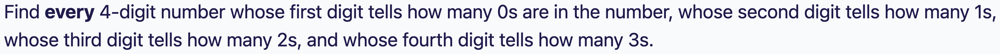
Answer: 1210 and 2020
Call the number abcd. The digits count the 0s, 1s, 2s and 3s, and there are only 4 digits, so a + b + c + d = 4.
The first digit a can't be 0 (that would say there are no 0s, but a itself would be one). Try a = 1, 2 and 3.
a = 1 (one 0): the other three digits add to 3 and exactly one of them is 0. Trying the cases gives 1210: one 0, two 1s, one 2, no 3s. ✓
a = 2 (two 0s): two of b, c, d are 0 and the other is 2, since the digits add to 4. Only 2020 works: two 0s, no 1s, two 2s, no 3s. ✓
a = 3 (three 0s): then b = c = d = 0, giving 3000. But 3000 contains one 3, while d = 0 says there are none. ✗
So the answers are 1210 and 2020. (A computer search of every 4-digit number agrees.)
⚡ Trick: Find a rule that every answer must follow (here, the digits add up to 4). It cuts thousands of cases down to a handful.
📝 Individual event (30 min)
These are written in the same style as the county tournament's individual event: 10 problems, 30 minutes, no calculators. Every right answer is worth 1 point. If you're stuck for more than 3 minutes, skip and come back.
🚫🤖 Please do NOT use AI, a calculator, or a search engine to solve these. This test is for you. A wrong answer helps us find what to teach next, and a copied answer helps no one.
30:00
1Decimals
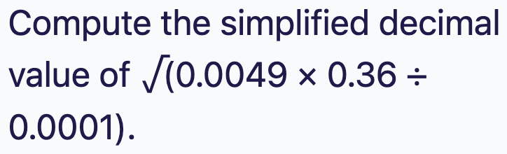
Answer: 4.2
Take the square root of each part separately: √0.0049 = 0.07, √0.36 = 0.6 and √0.0001 = 0.01.
So the value is 0.07 × 0.6 ÷ 0.01.
0.07 × 0.6 = 0.042, and 0.042 ÷ 0.01 = 4.2.
⚡ Trick: √(a × b ÷ c) = √a × √b ÷ √c. Square roots of tidy decimals are much easier one at a time than after multiplying everything out.
2Exponents
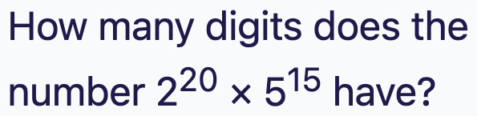
Answer: 17
Pair up the 2s and 5s, because 2 × 5 = 10. There are 15 fives, so make 15 pairs: 215 × 515 = 1015.
That leaves 220 − 15 = 25 = 32.
So the number is 32 × 1015, which is 32 followed by 15 zeros.
That's 2 + 15 = 17 digits.
⚡ Trick: Whenever you see powers of 2 and 5 together, pair them into 10s. The leftover part tells you the leading digits.
3Clock
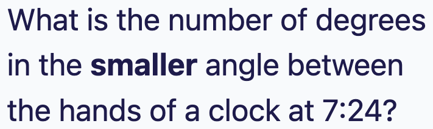
Answer: 78
The minute hand moves 6° per minute (360° ÷ 60). At 24 minutes it is at 24 × 6 = 144°, measured from the 12.
The hour hand moves 30° per hour plus 0.5° per minute. At 7:24 it is at 7 × 30 + 24 × 0.5 = 210 + 12 = 222°.
The difference is 222 − 144 = 78°.
78° is less than 180°, so it is already the smaller angle: 78.
⚡ Trick: Minute hand: 6° per minute. Hour hand: 30° per hour plus 0.5° per minute. Most mistakes come from forgetting that the hour hand keeps moving.
4Coordinates
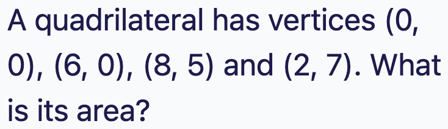
Answer: 38
Draw a box around it: from x = 0 to 8 and y = 0 to 7, which has area 8 × 7 = 56.
Cut off the three right triangles outside the shape:
between (6, 0) and (8, 5): ½ × 2 × 5 = 5
between (8, 5) and (2, 7): ½ × 6 × 2 = 6
between (2, 7) and (0, 0): ½ × 2 × 7 = 7
Area = 56 − 5 − 6 − 7 = 38.
Check with the shoelace formula: ½ × |0 + 30 + 46 + 0| = 38. ✓
⚡ Trick: For a polygon on a grid, draw the smallest box around it and subtract the right triangles in the corners. No formula needed.
5Counting digits
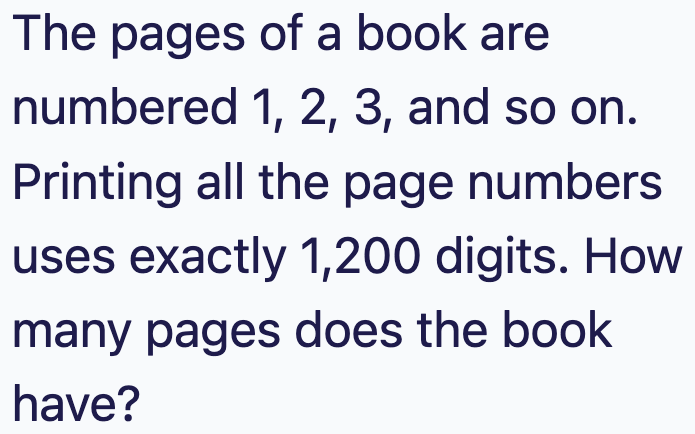
Answer: 436
Pages 1 to 9 use 9 digits.
Pages 10 to 99 are 90 pages with 2 digits each, which is 180 digits. Running total: 189.
That leaves 1200 − 189 = 1011 digits for 3-digit pages, which is 1011 ÷ 3 = 337 pages.
The 3-digit pages start at 100, so the last page is 99 + 337 = 436.
⚡ Trick: Count digits in blocks: 1-digit, 2-digit, then 3-digit pages. Don't forget the 3-digit pages start at 100, not at 1.
6Area ratios
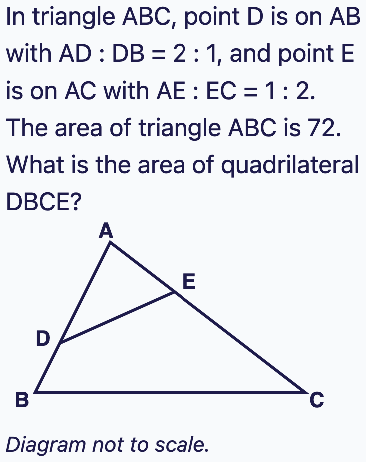
Answer: 56
Triangles ADE and ABC share the angle at A.
When two triangles share an angle, the area ratio is the product of the side ratios next to that angle: (AD/AB) × (AE/AC).
AD/AB = 2/3 and AE/AC = 1/3, so area ADE = 2/3 × 1/3 × 72 = 16.
Quadrilateral DBCE = 72 − 16 = 56.
⚡ Trick: Two triangles sharing a corner angle: area ratio = (side ratio) × (side ratio) for the two sides that make that angle.
7Arrangements
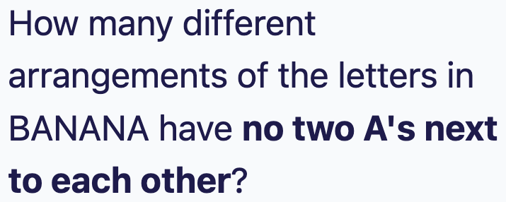
Answer: 12
Place the non-A letters first: B, N, N. They can be arranged in 3! ÷ 2! = 3 ways (BNN, NBN, NNB).
Each arrangement leaves 4 gaps for the A's: _ B _ N _ N _.
Choose 3 of the 4 gaps for the A's, one A per gap so no two touch: 4 ways.
Total: 3 × 4 = 12.
⚡ Trick: "No two together" counting: arrange the other items first, then drop the special ones into the gaps between them, one per gap.
8Cryptarithm
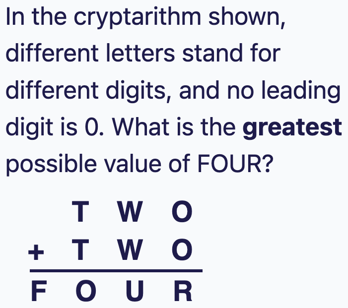
Answer: 1876
TWO + TWO is less than 2000, so F = 1.
To make FOUR big, make O big. O is the hundreds digit of 2 × TWO, so 2T plus any carry is 10 + O. With T = 9, O is 8 (no carry from the tens) or 9 (with a carry), and 9 is taken by T. So T = 9 and O = 8, with no carry from the tens column.
Ones column: 2 × O = 16, so R = 6 and 1 carries to the tens.
Tens column: 2W + 1 = U with no carry, so W ≤ 4. W = 4 gives U = 9, which clashes with T. W = 3 gives U = 7.
Check: 938 + 938 = 1876, and the six letters are all different. ✓ (A computer search of all cases agrees that 1876 is the greatest.)
⚡ Trick: Start with the leftmost digit of the answer (it's usually 1), then work from the end that you can control. To make something greatest, try the biggest digits first and back off only when there's a clash.
9Geometry (hard)
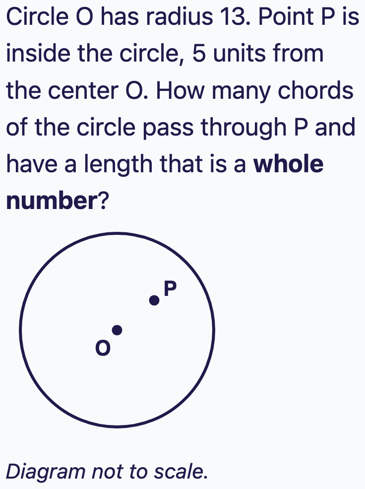
Answer: 4
Find the longest chord through P: the diameter, length 26.
Find the shortest chord through P: the one perpendicular to OP. Its half-length comes from a right triangle with hypotenuse 13 and leg 5: √(169 − 25) = 12. So the shortest chord is 24.
As the chord turns around P, its length slides smoothly from 26 down to 24 and back up to 26. So every length between 24 and 26 appears twice (once on each side), except the shortest and longest, which appear once each.
⚡ Trick: Chords through a fixed point: find the shortest (perpendicular to the radius line) and the longest (the diameter). Every length in between happens twice by symmetry.
10Counting (hard)
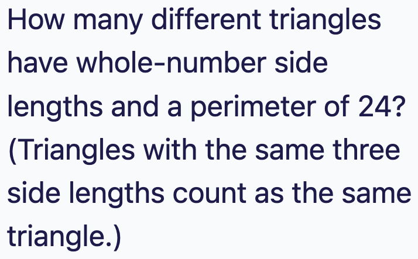
Answer: 12
Call the sides a ≤ b ≤ c with a + b + c = 24.
Triangle rule: a + b > c. Since a + b = 24 − c, this means 24 − c > c, so c < 12. Also c is the biggest side, so c ≥ 8.
Go through each c and count pairs a ≤ b ≤ c with a + b = 24 − c:
c = 11: a + b = 13 → (2,11), (3,10), (4,9), (5,8), (6,7): 5
c = 10: a + b = 14 → (4,10), (5,9), (6,8), (7,7): 4
c = 9: a + b = 15 → (6,9), (7,8): 2
c = 8: a + b = 16 → (8,8): 1
⚡ Trick: Sort the sides so a ≤ b ≤ c. The triangle rule then says the biggest side is less than half the perimeter. Count case by case on the biggest side.